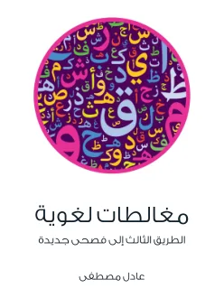

مغالطات لغوية: الطريق الثالث إلى فصحى جديدة

قراءة عربية أصلية في مقاطع مختارة، وليست تلخيصا كاملا للكتاب. موضع المقاطع في ملف PDF المرتبط: الصفحات ١١–١٢. نناقش ما تدعمه هذه المقاطع فقط، ولا نزعم استعراض جميع الفصول.
إنقاذ الفصحى يبدأ بتعيين المشكلة
يفتتح عادل مصطفى مقدمته بقلق على استعمال الفصحى، ثم يصل صعوبتها بما يراه اتساعا تاريخيا في اللهجات والتعريب والرصيد الحضاري. ويعلن مراجعة لعملية جمع اللغة وتقعيدها، مع لفت إلى أن خطأ المنشأ قد تترتب عليه نتائج نافعة. بذلك يبعد القارئ عن مساواة النقد بالهدم أو الموروث بالصواب الدائم.
زاوية وحدود القراءة
هذه قراءة في افتتاح المقدمة، وليست تقويما لكل حجج الكتاب أو تأييدا لأحكام التفضيل بين اللغات. أوصاف الاتساع والعمر والخصوصية دعاوى المؤلف، لا نتائج مقارنة أثبتناها هنا. السؤال المفيد هو كيف نميز تعقيد النظام اللغوي من صعوبات تعليمه، ثم نحدد أي مشكلة نريد إصلاحها فعلا.
الطبعة والقراءة
نسخة إلكترونية مجانية رسمية من مؤسسة هنداوي عبر صفحات. رابط PDF من خادم الناشر، وقد تحققنا أنه يرسل الملف للتنزيل. لا نستضيف نسخة من الكتاب. هذه النسخة من الكتاب صادرة ومتاحة مجانًا بموجب اتفاق قانوني بين مؤسسة هنداوي والسيد الدكتور عادل مصطفى. النسخة الصوتية صادرة ومتاحة مجانًا بدعم من وفد الاتحاد الأوروبي في مصر.
تنزيل PDF المجاني ↓ القراءة والمصدر الرسمي ↗